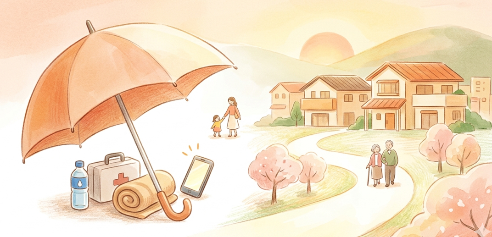

なごやBosaiブック 完全保存版

いつものカバンに、安心をひとつ。
忙しい毎日でも、少しの工夫で家族の笑顔を守めます。女性や子育て世代の視点から、いざという時に本当に役立つ防災の知恵を、「これさえ読めば大丈夫」なレベルまで網羅してまとめました。気になる項目をタップして、今日から「ちょい足し防災」を始めましょう！
👜
カバンと職場の「ちょい足し」防災
外出先や職場で被災した時のために、いつものカバンやロッカーに少しだけ防災グッズを忍ばせておきましょう。
いつものカバンに入れたい基本セット ▼
- モバイルバッテリー： 情報収集のための必需品。
- マスク・ウェットティッシュ： 粉塵防止や感染症対策、手洗いの代わりに。
- おりものシート・生理用品： 下着が替えられない時や、突然の生理に。
- あめ・お菓子： 疲れた時に口にすると安心。
- ストール（大判ハンカチ）： マスクや包帯、授乳ケープやブランケット代わりにもなる万能アイテム。
職場のロッカー・デスクに備えるもの ▼
- 歩きやすいスニーカー： ヒールでは割れた道路を歩けません。フラットシューズでも可。
- コンタクト保存液・予備の眼鏡： 見えない不安を解消。
- 数日分の下着・着替え： 帰宅困難になった場合に備えて。
- 汗ふきシート・メイク落としシート： 入浴できない時のリフレッシュに。
- 非常食（お菓子・ナッツ類）： 日持ちするものを引き出しに。
💄
女性・子育て・ペットのための備え
女性特有の悩みや、赤ちゃん、ペットを守るための特別なアイテムリストです。避難所でのストレスを大きく軽減します。
女性の安心を守る神アイテム ▼
- カップつき下着： 着用感が楽で、避難所でも周りの目が気になりにくいです。洗濯物を干す際も安心。
- ポンチョ： 着替えの目隠しや、授乳ケープ、トイレ時の目隠しとして活躍します。
- オールインワン化粧品： 水が少ない環境でも、1つでスキンケアが完了し肌トラブルを防ぎます。
- エッセンシャルオイル： 慣れない環境でのストレスを香りで癒やします。
- デリケートゾーン用シート・携帯用ビデ： 入浴できない環境での清潔保持と感染症（膣炎など）予防に。
パパママ・妊婦さん・ペットの備え ▼
- 赤ちゃん向け： おしりふき、紙おむつ、アレルギー対応食、抱っこ紐、使い捨て哺乳瓶。
- ミルクについて： 災害のストレスで一時的に母乳が出にくくなることがありますが、吸わせ続けると回復します。粉・液体ミルクを作る際は必ず清潔な手で！
- プレママ向け： 母子健康手帳、マタニティマーク、出産準備品。
- ペット向け： ペットフードと水、ケージ、リード、トイレ用品。
- 子ども向け： 食べ慣れたおやつ・ジュースを多めに。気を紛らわせるトランプ等の小さなおもちゃ。
🍛
自宅の備えと「食・トイレ」のサバイバル
水や食料は「1週間分」が目安。非常食だけでなく、普段の食事を活用する「ローリングストック」がカギになります。
食料備蓄とポリ袋調理のレシピ ▼
- 飲料水： 1人1日3リットルを目安に。
- ローリングストック： 普段食べるレトルト食品、缶詰、カップ麺、フリーズドライ、乾物（豆・海藻・ナッツ）を多めに買い、古いものから食べて買い足す方法です。
- 調理器具： カセットコンロとガスボンベは必須！
- 【レシピ】ポリ袋で作る蒸しパン：
「高密度ポリエチレン」の袋に、ホットケーキミックス50gと水大さじ3〜4（お好みでドライフルーツ）を入れ、空気を抜いて縛ります。沸騰したお湯に入れて30分ゆでるだけで温かい食事が完成！
我慢は厳禁！トイレの備えと自作術 ▼
トイレを我慢すると膀胱炎などの病気になります。絶対に行ける時に行ってください。
- 停電や断水でトイレは流せなくなります。市販の「携帯トイレ」や「消臭スプレー」を多めに備蓄しましょう。
- 自宅での簡易トイレの作り方：
- 便座を上げて、ゴミ袋を1枚かぶせる。
- 便座を下げて、その上からもう1枚ゴミ袋をかぶせる。
- 中に細かくちぎった新聞紙（水分を吸わせるため）を入れて用を足す。
📱
いざという時の行動と防犯・情報収集
正しい情報が命を守ります。また、避難生活での「防犯」も女性や子どもにとって非常に重要なテーマです。
デマに注意！正しい情報の集め方 ▼
- デマを拡散しない： 災害時は不確かな情報が広がります。必ず「自治体の公式HP」などで真偽を確認し、疑わしい情報はシェアしないこと。
- 便利なアプリ： 自治体や報道機関の公式SNS（XやLINE）、気象情報アプリ、ラジオアプリ、「名古屋市防災アプリ」を平時から入れておきましょう。
- 災害用伝言ダイヤル「171」：
録音は「171 → 1 → 電話番号 → 録音」
再生は「171 → 2 → 電話番号 → 再生」
スマホが壊れたり充電切れになる事を見越して、大切な連絡先は紙のメモでも持ち歩ましょう。
災害発生！その時どう動く？ ▼
- 地震のとき： まずは頭を守り、窓ガラスから離れる。
- 風水害のとき： 「警戒レベル4」が出たら全員避難！小さな子どもがいる場合は「レベル3」で早めに避難。時間がない場合は少しでも高いところへ。
- 外出先のとき： むやみに移動しない！一斉移動は大混雑を招き危険です。コンビニやガソリンスタンドなど「徒歩帰宅支援ステーション」のステッカーがあるお店で水や情報を得ましょう。
- 自宅が安全なら「在宅避難」： 倒壊や火災の危険がなければ、無理に避難所へ行く必要はありません。
避難所のリアルと徹底すべき防犯対策 ▼
停電で暗くなった街や避難所では、女性への性犯罪や詐欺が増加する傾向があります。
- 1人で行動しない： トイレなどに行く時も複数人で。子どもから絶対に目を離さない。
- 防犯ブザー： いつでも鳴らせるように身につけておく。
- 悪徳商法に注意： 災害に便乗した詐欺や不審な訪問には、身分証を確認し、1人で対応しないこと。
- 避難所はみんなで運営する： 行政任せではなく避難者で運営します。下着や生理用品の配布は女性が担当するなど、男女両方の視点を入れることでトラブルを防げます。
- 女性専用スペースの確保： 着替えや授乳ができるよう、防犯上安全な場所（死角にならない、巡回しやすい場所）にパーテーション等で専用スペースを設けましょう。
🍀
女性のための安心・サポート窓口
いざという時に、女性の不安や悩みに寄り添う専門の相談窓口があります。犯罪被害に遭ったり、見かけたりした場合は絶対に一人で抱え込まず、警察や窓口に頼ってください。
各種相談窓口の連絡先を開く ▼
※災害の直後は電話がつながりにくい場合があります。